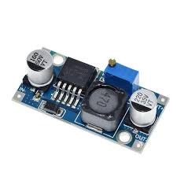

Sensores
10 componentesSensor DHT11 / DHT22
Sensor digital de temperatura y humedad relativa del ambiente. El DHT11 mide entre 0–50 °C y 20–90% HR. El DHT22 es más preciso: −40 a 80 °C y 0–100% HR. Trabaja con un solo pin de datos y protocolo 1-Wire.
// Para qué sirve
Estaciones meteorológicas caseras, control de invernaderos, sistemas de climatización, monitoreo de bodegas o servidores.
AGREGAR IMAGEN
HC-SR04
Sensor Ultrasónico HC-SR04
Sensor de distancia por ultrasonido. Emite un pulso de 40 kHz y mide el tiempo de retorno del eco para calcular la distancia. Rango de 2 cm a 400 cm con precisión de ±3 mm. No requiere contacto físico con el objeto.
// Para qué sirve
Detección de obstáculos en robots, medición de nivel de líquidos, sistemas de estacionamiento, alarmas de proximidad.
Sensor PIR (Movimiento)
Sensor infrarrojo pasivo (Passive Infrared) que detecta cambios en la radiación IR del entorno, especialmente la emitida por cuerpos cálidos en movimiento. Incluye potenciómetros para ajustar sensibilidad y tiempo de retardo. Cubre hasta 7 metros y 120° de ángulo.
// Para qué sirve
Alarmas de seguridad, activación automática de luces, conteo de personas, sistemas de presencia en habitaciones.
LDR — Fotorresistencia
Resistencia dependiente de la luz (Light Dependent Resistor). Su valor en ohms varía inversamente con la intensidad luminosa: en oscuridad puede llegar a 1 MΩ y bajo luz intensa baja a pocos cientos de Ω. Se usa junto a un divisor de tensión para leer valores analógicos.
// Para qué sirve
Encendido automático de luces al oscurecer, seguidor solar, detección de día/noche, alarmas de luz en cuartos oscuros.
Sensor de Llama / Fuego
Fotodetector infrarrojo sensible a la longitud de onda emitida por una llama (760–1100 nm). Detecta fuego a distancias de hasta 100 cm dependiendo del tamaño de la flama. Tiene salida digital (umbral ajustable con potenciómetro) y salida analógica.
// Para qué sirve
Sistemas de detección de incendios, robots apaga-fuegos, alarmas de seguridad en cocinas o laboratorios.
Sensor de Gas MQ-2 / MQ-135
Sensor electroquímico que detecta concentraciones de gases en el aire. El MQ-2 detecta GLP, humo, metano e hidrógeno. El MQ-135 detecta CO₂, NH₃, alcohol, benceno y humo. Requieren precalentamiento de 24–48 horas para calibración óptima.
// Para qué sirve
Detectores de fugas de gas doméstico, calidad del aire interior, sistemas de ventilación automática, alarmas de CO₂.
Sensor de Lluvia
Placa detectora de agua compuesta por pistas conductoras que al ser cubiertas por agua cierran un circuito y cambian la resistencia. La placa de control convierte esto en señal digital o analógica. Resistente a la exposición directa a la lluvia.
// Para qué sirve
Detección de lluvia para activar toldos o cerrar ventanas automáticamente, sistemas de riego inteligente, estaciones meteorológicas.
Sensor de Humedad de Suelo
Dos electrodos que se insertan en la tierra y miden la conductividad del suelo, que varía con la humedad. A mayor humedad, menor resistencia y mayor voltaje de salida. La versión capacitiva es más duradera ya que no sufre de corrosión en los electrodos.
// Para qué sirve
Sistemas de riego automático para plantas, agricultura inteligente, monitoreo de jardines y macetas, huertos domésticos.
IMU MPU-6050 (Giroscopio + Acelerómetro)
Unidad de medición inercial de 6 ejes: acelerómetro triaxial y giroscopio triaxial en un solo chip. Se comunica por I²C. Mide aceleración (±2g a ±16g), velocidad angular (±250 a ±2000 °/s) y tiene sensor de temperatura integrado.
// Para qué sirve
Drones y estabilizadores, robots de equilibrio, guantes de realidad virtual, detección de gestos, podómetros DIY.
Sensor de Temperatura DS18B20
Sensor digital de temperatura en formato TO-92 (similar a transistor) que usa el protocolo 1-Wire. Rango de −55 °C a +125 °C con resolución de hasta 12 bits (0.0625 °C). Varios sensores pueden compartir el mismo pin de datos con direcciones únicas.
// Para qué sirve
Medición precisa de temperatura en agua o superficies, control de temperatura en impresoras 3D, termostatos, fermentación.
Módulos
8 componentesAGREGAR IMAGEN
Módulo Relé 5V
Módulo Relé 5V (1/2/4/8 canales)
Interruptor electromagnético controlado por señal digital. Permite a Arduino controlar cargas de alta potencia (hasta 250V AC / 10A). Incluye optoacoplador para aislar el circuito de control del circuito de carga. Disponible en versiones de 1, 2, 4 u 8 canales.
// Para qué sirve
Encender/apagar electrodomésticos, controlar focos de 220V, activar motores de alta potencia, automatización del hogar.
AGREGAR IMAGEN
Módulo Lector MicroSD
Módulo Lector MicroSD
Adaptador para tarjetas MicroSD que se comunica con Arduino via SPI. Soporta tarjetas de hasta 32 GB en formato FAT16 o FAT32. Opera a 3.3V lógico con conversor de nivel integrado para ser compatible con los 5V de Arduino.
// Para qué sirve
Guardar datos de sensores (datalogger), reproducir archivos de audio, almacenar configuraciones o imágenes para displays.
AGREGAR IMAGEN
Módulo RTC DS3231
Módulo RTC DS3231 (Reloj en tiempo real)
Chip de reloj en tiempo real con oscilador de cristal compensado por temperatura (TCXO). Mantiene hora y fecha precisas aunque Arduino esté apagado gracias a una batería de respaldo CR2032. Deriva menos de 2 minutos por año. Comunicación I²C.
// Para qué sirve
Registrar la hora exacta en dataloggers, despertadores, sistemas de riego programados, marcadores de tiempo para eventos.
AGREGAR IMAGEN
Módulo RFID RC522
Módulo RFID RC522
Lector/escritor de tarjetas y llaveros RFID a 13.56 MHz (estándar ISO 14443A). Lee el UID único de cada tag y puede escribir datos en la memoria del tag. Viene con una tarjeta y un llavero de prueba. Alcance de lectura de hasta 5 cm. Comunicación SPI.
// Para qué sirve
Control de acceso con tarjeta, sistemas de asistencia, identificación de objetos, pago o registro con tarjeta personalizada.
AGREGAR IMAGEN
Módulo Cargador TP4056
Módulo Cargador Li-Po TP4056
Cargador de baterías de litio (Li-Ion / Li-Po) vía micro-USB. Carga a corriente constante/voltaje constante (CC/CV) con corte automático al llegar a 4.2V. La versión con protección incluye circuito de protección contra sobrecarga, sobredescarga y cortocircuito.
// Para qué sirve
Proyectos portátiles con batería recargable, wearables, sensores inalámbricos alimentados con batería de celular.
AGREGAR IMAGEN
Módulo PWM PCA9685
Módulo PWM PCA9685 (16 canales)
Controlador PWM de 16 canales con resolución de 12 bits por canal, controlado por I²C. Permite manejar hasta 16 servomotores simultáneamente usando solo 2 pines de Arduino. Múltiples módulos se pueden encadenar para hasta 992 salidas PWM.
// Para qué sirve
Brazos robóticos con muchos servos, hexápodos, control de LEDs RGB múltiples, drivers de motores DC independientes.
AGREGAR IMAGEN
Módulo MP3 DFPlayer Mini
Módulo MP3 DFPlayer Mini
Reproductor de audio MP3 completo con lector de tarjeta MicroSD integrado. Soporta MP3, WAV y WMA. Tiene amplificador de 3W integrado para conectar un altavoz directamente. Se controla por puerto serie (UART) con comandos simples. Soporta hasta 32 GB.
// Para qué sirve
Agregar audio a proyectos: robots parlantes, alarmas con sonido personalizado, juguetes interactivos, museos interactivos.
AGREGAR IMAGEN
Driver Motor L298N
Driver de Motor L298N
Puente H doble que permite controlar 2 motores DC o 1 motor paso a paso (stepper) con control de dirección y velocidad (PWM). Soporta voltajes de motor de 5V a 35V y corriente de hasta 2A por canal. Incluye regulador de 5V para alimentar Arduino.
// Para qué sirve
Robots con ruedas, carritos controlados, control de motores DC bidireccionales, impresoras 3D simples, automatizaciones.
Comunicación Inalámbrica
5 componentesAGREGAR IMAGEN
Módulo Bluetooth HC-05
Módulo Bluetooth HC-05 / HC-06
Módulo Bluetooth 2.0 clásico que actúa como puerto serie inalámbrico (SPP). El HC-05 puede ser maestro o esclavo; el HC-06 solo esclavo. Se configura con comandos AT vía UART. Alcance de hasta 10 metros en interiores. Compatible con cualquier dispositivo Bluetooth.
// Para qué sirve
Control de robots desde smartphone, envío de datos de sensores al celular, comunicación entre dos Arduinos, mandos de juego.
AGREGAR IMAGEN
Módulo WiFi ESP8266
Módulo WiFi ESP8266 (ESP-01)
Microcontrolador con WiFi 802.11 b/g/n integrado. Como módulo para Arduino se controla por comandos AT via UART. También puede programarse directamente con el IDE de Arduino como placa independiente. Opera solo a 3.3V y requiere fuente de corriente suficiente (hasta 250 mA).
// Para qué sirve
Conectar proyectos a internet, enviar datos a plataformas IoT (Blynk, ThingSpeak), servidores web locales, domótica WiFi.
AGREGAR IMAGEN
Transceptor NRF24L01
Transceptor RF NRF24L01+
Radio transceptor de 2.4 GHz con velocidad de hasta 2 Mbps. Hasta 125 canales independientes y 6 direcciones de recepción simultáneas. La versión con antena externa alcanza hasta 1000 metros en campo abierto. Opera a 3.3V pero tolera señales de 5V. Comunicación SPI.
// Para qué sirve
Red de sensores inalámbrica, control remoto de largo alcance, comunicación entre varios Arduinos, telemetría de drones.
AGREGAR IMAGEN
Módulo LoRa Ra-02 / SX1278
Módulo LoRa SX1278 (433 MHz)
Módulo de radiofrecuencia de largo alcance (Long Range) que usa modulación LoRa chirp spread spectrum. Alcance de hasta 10 km en campo abierto con bajo consumo energético. Velocidad de 0.3–37.5 kbps. Ideal para redes IoT de área amplia (LPWAN).
// Para qué sirve
Redes de sensores agrícolas, telemetría de largo alcance, medidores inteligentes de agua/gas, tracking GPS rural.
AGREGAR IMAGEN
Módulo GSM SIM800L
Módulo GSM/GPRS SIM800L
Módulo de comunicación celular cuadribanda (850/900/1800/1900 MHz) con soporte para voz, SMS y datos GPRS. Acepta nano-SIM. Permite a Arduino enviar y recibir SMS, hacer llamadas y conectarse a internet por red celular. Requiere fuente estable de 3.7–4.2V y al menos 2A pico.
// Para qué sirve
Alertas por SMS, trackers GPS con reporte celular, sistemas de seguridad remotos, IoT sin WiFi disponible.
Actuadores
5 componentesAGREGAR IMAGEN
Servomotor SG90 / MG996R
Servomotor SG90 / MG996R
Motor con caja reductora y encoder de posición integrado. Recibe señal PWM y rota a un ángulo preciso (0–180° o continua). El SG90 es de plástico (1.8 kg·cm), el MG996R tiene engranajes metálicos y mayor torque (9.4 kg·cm). Se controla con la librería Servo.h de Arduino.
// Para qué sirve
Brazos robóticos, timones de aeromodelos, cámaras pan-tilt, cerraduras, apertura de válvulas, mecanismos de dirección.
AGREGAR IMAGEN
Motor Paso a Paso 28BYJ-48
Motor Paso a Paso 28BYJ-48 + ULN2003
Motor unipolar de 5 cables con driver ULN2003 incluido. Da 2048 pasos por revolución en modo medio paso (360°/2048 = 0.176° de precisión). Opera a 5V. Ideal para proyectos de bajo torque que requieren posicionamiento preciso sin feedback.
// Para qué sirve
Relojes de agujas, telescopios caseros, impresoras simples, mecanismos de posicionamiento preciso, cortinas automáticas.
AGREGAR IMAGEN
Buzzer Activo / Pasivo
Buzzer Activo y Pasivo
Transductor piezoeléctrico que convierte señal eléctrica en sonido. El buzzer activo tiene oscilador interno: solo necesita 5V para sonar a una frecuencia fija. El pasivo necesita señal PWM y puede reproducir diferentes frecuencias y tonos musicales programados con tone().
// Para qué sirve
Alarmas sonoras, notificaciones de eventos, melodías simples, confirmación de acciones en interfaces, temporizadores.
AGREGAR IMAGEN
LED RGB / Tira LED WS2812
LED RGB / Tira NeoPixel WS2812B
LED RGB con ánodo común o cátodo común que combina tres colores (R, G, B) en un solo componente. La tira WS2812B integra el controlador en cada LED y usa un único cable de datos para controlar cientos de LEDs en serie con colores independientes. Compatible con librería FastLED o Adafruit NeoPixel.
// Para qué sirve
Iluminación ambiental dinámica, indicadores de estado con colores, efectos visuales, decoración interactiva, matrices de LED.
AGREGAR IMAGEN
Mini Bomba de Agua DC
Mini Bomba de Agua Sumergible DC
Bomba peristáltica o centrífuga de 3–6V DC. Caudal de 1.2 a 2 L/min. Es sumergible y puede impulsar agua hasta 40–80 cm de altura. Se controla mediante un transistor o relé conectado a Arduino. No conectar directamente al pin de Arduino (requiere driver).
// Para qué sirve
Sistemas de riego automático, fuentes decorativas, enfriamiento por agua, acuarios automatizados, dosificadores de líquidos.
Displays y Pantallas
4 componentesAGREGAR IMAGEN
Display LCD 16×2 I2C
Display LCD 16×2 con I²C
Pantalla de cristal líquido con 2 filas y 16 columnas de caracteres. El módulo I²C (PCF8574) reduce la conexión a solo 2 pines (SDA/SCL) en lugar de los 6+ del LCD directo. Retroiluminación azul o verde ajustable. Contraste ajustable con potenciómetro integrado.
// Para qué sirve
Mostrar lecturas de sensores, menús interactivos, mensajes de estado, datos de temperatura/humedad, contadores, relojes.
AGREGAR IMAGEN
OLED SSD1306 0.96"
Pantalla OLED SSD1306 0.96"
Display OLED monocromático de 128×64 píxeles. Al ser OLED no necesita retroiluminación: cada píxel emite su propia luz, lo que da contraste perfecto y bajo consumo (máx 40 mA). Opera a 3.3V o 5V. Interfaz I²C o SPI. Compatible con la librería Adafruit SSD1306.
// Para qué sirve
Wearables y proyectos portátiles, menús gráficos, gráficos en tiempo real de sensores, relojes digitales compactos.
AGREGAR IMAGEN
Matriz LED 8×8 MAX7219
Matriz LED 8×8 con MAX7219
64 LEDs dispuestos en una cuadrícula de 8×8 controlada por el chip MAX7219 mediante SPI. Se pueden encadenar múltiples matrices (hasta 8 o más) usando el mismo bus SPI con pines CS independientes. Compatible con la librería MD_MAX72XX o LedControl.
// Para qué sirve
Paneles de texto desplazante, animaciones pixeladas, juegos estilo Tetris o Snake, marcadores de puntuación, relojes.
AGREGAR IMAGEN
Pantalla TFT ILI9341 2.8"
Pantalla TFT ILI9341 2.8" a Color
Display TFT LCD a color de 320×240 píxeles con 65,536 colores (16 bits). Muchas versiones incluyen lector SD y pantalla táctil resistiva (XPT2046). Controlador ILI9341 via SPI. Ideal para interfaces gráficas, imágenes a color y HMI. Requiere adaptador de nivel para Arduino 5V.
// Para qué sirve
Interfaces gráficas de usuario, dashboards de sensores a color, sistemas de navegación simple, reproductores de imágenes.
Alimentación y Energía
3 componentes
AGREGAR IMAGEN
Regulador Step-Down LM2596
Regulador Step-Down (Buck) LM2596
Convertidor DC-DC reductor de voltaje (buck) ajustable. Entrada de 4–40V, salida ajustable de 1.25–37V con corriente hasta 3A. Eficiencia del 92%. Mucho más eficiente que los reguladores lineales (LM7805) ya que convierte el exceso de voltaje en corriente en lugar de calor.
// Para qué sirve
Alimentar Arduino desde baterías de 12V, reducir voltaje de fuentes de alimentación, alimentar múltiples voltajes desde una sola fuente.
AGREGAR IMAGEN
Módulo Step-Up Boost MT3608
Módulo Step-Up (Boost) MT3608
Convertidor DC-DC elevador de voltaje. Entrada de 2–24V, salida ajustable de hasta 28V con corriente de hasta 2A. Permite elevar el voltaje de una batería de litio (3.7V) a 5V o 12V. La versión USB fija la salida a 5V y tiene conector USB para cargar dispositivos.
// Para qué sirve
Proyectos portátiles con batería de litio, banco de energía DIY, alimentar dispositivos de 5V desde 3.7V, energía solar.
AGREGAR IMAGEN
Panel Solar 5V / 6V
Panel Solar + Módulo MPPT / CN3791
Celda fotovoltaica que convierte luz solar en electricidad. Combinado con un módulo de carga solar (CN3791 o similar con MPPT), permite cargar baterías Li-Po de forma autónoma. Los módulos MPPT maximizan la extracción de energía adaptándose a las condiciones de luz.
// Para qué sirve
Estaciones de sensores autónomas en campo, medidores de agua remotos, proyectos IoT solares, jardines inteligentes sin electricidad.